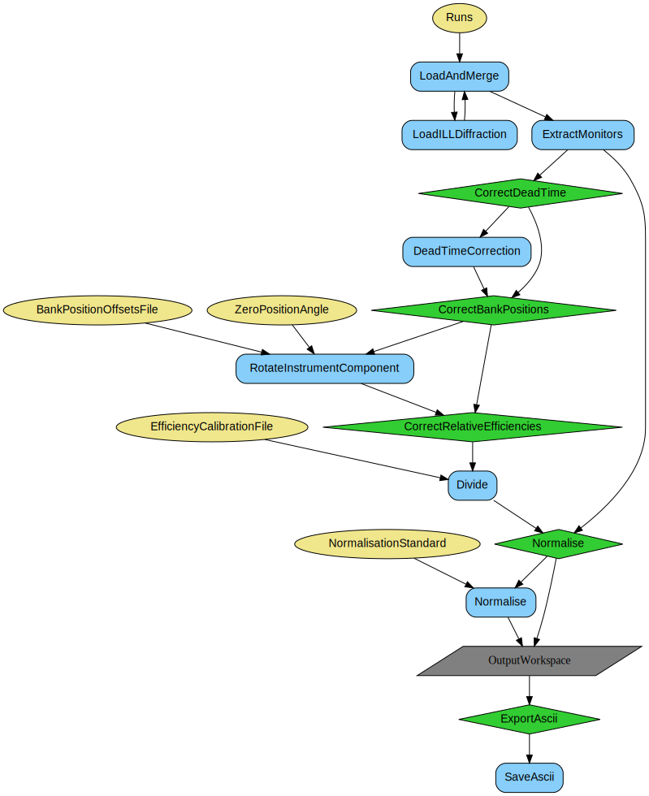

\(\renewcommand\AA{\unicode{x212B}}\)
D4ILLReduction v1¶
{kind=link}
D4ILLReduction dialog.¶
Summary¶
Performs diffraction data reduction for the D4 instrument at the ILL.
See Also¶
Properties¶
Name |
Direction |
Type |
Default |
Description |
|---|---|---|---|---|
Run |
Input |
list of str lists |
Mandatory |
File path of run(s). Allowed values: [‘nxs’] |
OutputWorkspace |
Output |
WorkspaceGroup |
Mandatory |
The output workspace based on the value of ProcessAs. |
BankPositionOffsetsFile |
Input |
string |
The path to the file with bank position offsets. |
|
ZeroPositionAngle |
Input |
number |
0 |
The angular position correction common to all banks. |
EfficiencyCalibrationFile |
Input |
string |
The path to the file with relative detector efficiencies. |
|
DeadTimeTauDetector |
Input |
number |
7e-06 |
The count rate coefficient for detectors. |
DeadTimeTauMonitor |
Input |
number |
2.4e-06 |
The count rate coefficient for the monitor. |
Wavelength |
Input |
number |
0.5 |
The measurement wavelength, in Angstrom. Will be used if not default or if Ei in metadata is 0. |
NormaliseBy |
Input |
string |
Monitor |
What normalisation approach to use on data. Allowed values: [‘Monitor’, ‘Time’, ‘None’] |
NormalisationStandard |
Input |
number |
1000000 |
Standard value against which the normalisation which be performed. The default is for normalisation to monitor. |
ScatteringAngleBinSize |
Input |
number |
0.5 |
Scattering angle bin size in degrees used for expressing scan data on a single TwoTheta axis. |
ExportASCII |
Input |
boolean |
True |
Whether or not to export the output workspaces as ASCII files. |
ClearCache |
Input |
boolean |
True |
Whether or not to clear the cache of intermediate workspaces. |
DebugMode |
Input |
boolean |
False |
Whether to create and show all intermediate workspaces at each correction step. |
Description¶
This is the main algorithm performing the liquid diffraction reduction for data recorded with the ILL instrument D4. The algorithm’s workflow diagram can be found below.
The raw data will be corrected for, in order:
Dead time, applied separately to monitor and detectors data
Imperfect banks placement, using both zero angle correction and ASCII input file correcting bank angle around the sample
Relative efficiency, using input ASCII file with one efficiency value per detector
Normalisation to a standard, either time or monitor counts.
The user has an option to not perform operations 2-4 by not providing relevant inputs or choosing None as the normalisation method.
The output are diffractograms as a function of scattering angle \(2\theta\), and momentum exchange \(q\). The output can be saved in the ASCII format, as .dat files, if requested.
Caching with ADS¶
This algorithm cleans-up the intermediate workspaces if ClearCache property is checked (True by default).
Default naming schemes are imposed to ensure smooth communication of workspace contents. While user can specify the name for the output WorkspaceGroup, the names of contents will consist of the name of the group as a prefix, diffractogram as the middle part, and the X-axis unit (either q or 2theta as the suffix).
Saving output¶
When ExportASCII property is checked, the output workspaces are saved in the default save directory. Each of diffractograms is saved in a separate file with .dat extension.
Workflows¶
General workflow¶
Note
To run these usage examples please first download the usage data, and add these to your path. In Mantid this is done using Manage User Directories.
Example - vanadium reduction at two positions
output_ws = 'vanadium_ws'
D4ILLReduction(
Run='387229:387230',
OutputWorkspace=output_ws,
NormaliseBy='Monitor',
ExportAscii=False)
tthAxis = mtd[output_ws][0].readX(0)
print('{}: 2theta range: {:.3}...{:.3}A'.format(
mtd[output_ws][0].name(), tthAxis[0], tthAxis[-1]))
qAxis = mtd[output_ws][1].readX(0)
print('{}: Q range: {:.3}...{:.3}A'.format(
mtd[output_ws][1].name(), qAxis[0], qAxis[-1]))
Output:
vanadium_ws_diffractogram_2theta: 2theta range: 9.69...1.39e+02A
vanadium_ws_diffractogram_q: Q range: 2.12...23.5A
Categories: AlgorithmIndex | ILL\Diffraction
Source¶
Python: D4ILLReduction.py